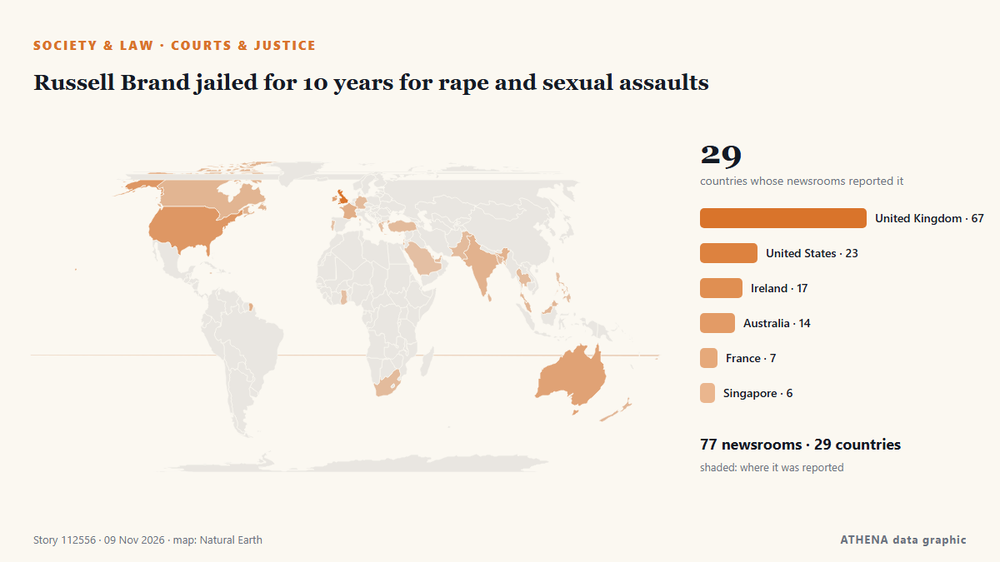

Europe
Europe: the latest events country by country, ranked by ATHENA with risk, sources and countries.

Society & LawRussell Brand jailed for 10 years for rape and sexual assaults
The jury in the Russell Brand rape trial begins its deliberations in London after more than three weeks of evidence. from ABC News Australia
Supermarket freezers in several European countries hit by apparent cyberattacks
Supermarkets in Sweden, Belgium, Luxembourg, Ireland and Estonia were hit Monday by problems with freezers and fridges that apparently were caused by cyberattacks, forcing some to dispose of ruined… from The Canadian Press (via CityNews)
Two men charged in UK with helping Iran over RAF Fairford incident
British prosecutors said on Tuesday they had charged two men under the National Security Act over an incident last month at the RAF Fairford airbase, with police saying the two were suspected of… from Cyprus Mail
Italy blames pro-Russian hackers for leaking Tajani’s personal data
Italy’s prime minister, Giorgia Meloni, has blamed pro-Russian hackers for posting the foreign minister’s personal data on the dark web. from The Next Web
UK PM Burnham says he is ‘open’ to formal apology for slavery, but rules out reparations
At least 12.5 million Africans were abducted and sold into slavery. from Express Tribune
Attacker killed outside Belgrade’s Israeli embassy
Serbian police say an unidentified assailant attacked a guard with knives outside the Israeli Embassy in Belgrade and was killed just after midnight Wednesday. from ABC News (International)